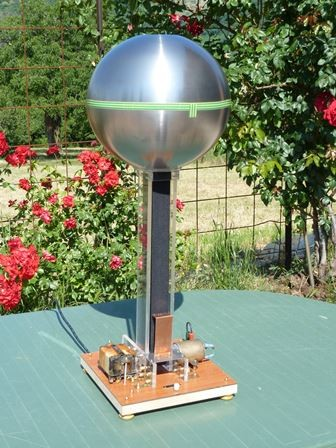

Ecco la macchina di Van de Graaff completa!

La cinghia è il componente che più mi ha impegnato nelle sperimentazioni... alla fine è risultato vincente un elastico nero da 40 mm lungo un metro, debitamente incollato a formare un nastro continuo; è composto per l'84% da fibra poliacrilica e il 16% da fili di gomma.
Altrettanto bene funzionano il PVC ed il polietilene (quello delle coperture per le serre), ma quest'ultimo è difficilissimo da incollare e poco elastico.
Il nastro di gomma gialla di tipo "para" funziona benissimo ma è di più difficile reperimento.
Invece la tipica gomma nera da camera d'aria di bicicletta ha un rendimento pari esattamente a zero .
Chi avesse la vaga intenzione di fare un modello di questo interessante generatore elettrostatico si guardi anche la serie triboelettrica dei materiali, nella quale sono elencate le proprietà di elettrizzazione per strofinio reciproco fra molti materiali con i quali costruire i rulli e la cinghia.
La tensione di uscita risente pesantemente dell'umidità atmosferica, andando quasi a zero quando l'umidità è molto elevata; in una giornata particolarmente secca supera invece i 200 mila volt.
Le scariche luminose (uno schiocco secco, s-tak!) arrivano ad un massimo di circa 8 cm (sono tanti!), mentre le scariche scure (un rumore sordo, quasi un "bop-bop") per effetto corona sono più lunghe e ramificate, fatte esattamente come dei microfulmini naturali.
L'effetto "peli sul braccio" si sente con tempo secco fino a quasi mezzo metro.
Si tenga presente che per scariche fra sfere abbastanza grandi (non fra punte) la tensione di rottura in aria secca e in corrente continua è abbastanza lineare ed è attendibile considerarla 25/30000 volt/cm.
Più di così è difficile ottenere da sfere di queste dimensioni perchè si autoscaricano per effluvio, soprattutto dalla parte forata inferiore verso la cinghia.
Attenzione a non confondere questo generatore, che funziona in corrente continua, con un generatore di Tesla, che funziona in alta frequenza.
I due dispositivi non hanno NIENTE in comune, e men che meno la potenza impegnata ed il tipo di scarica.
Se la sfera presenta anche una minima discontinuità appuntita (basta un millimetro) la tensione sfugge alla grande per effetto corona e per questo non è possibile far avvenire le scariche tra due punte.
Come scaricatore si usa una sfera (le dimensioni non sono critiche, dai 50 mm di diametro in su) fissata su un sostegno isolante e collegata a massa, ovvero al pettine inferiore del generatore e a tutte le parti metalliche adiacenti.
Nonostante la tensione sia elevatissima, la corrente è estremamente bassa e l'energia accumulata in un condensatore di capacità così piccola (17 pF) è minima, di conseguenza le scariche sono del tutto innoque; occorre solo il (notevole!) coraggio di prendere la prima scossa, poi le altre vengono da sè: non dico che ci si diverta a mettere le nocche delle dita e prendere una stecca da un centinaio di kilovolt, ma è un'impresa fattibile...
(Vista l'esperienza che mi è capitata con più circuiti elettronici nelle vicinanze, per chi ha il pacemaker direi che giocare con una VdG è un sistema quasi infallibile per tentare di fermarlo...).
La sperimentazione per l'ottimizzazione del generatore è stata stimolante ma molto impegnativa, con la conseguenza che ho dovuto smontare e rimontare i perni dei rulli un'infinità di volte per poter provare cinghie, distanze, pettini, ... (senza i cuscinetti avrei svergolato i fori nella plastica in maniera indecente).
Ci sono begli esperimenti di elettrostatica da fare con la VdG: per ora li lascio alla fantasia dei lettori.
(Una doverosa conclusione: da tempo il mio amico Guglielmo mi incoraggiava a fare questa macchinetta; siccome ora sta passando un periodo personale veramente difficile, a lui dedico questo lavoro).